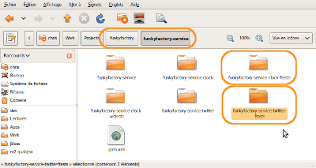
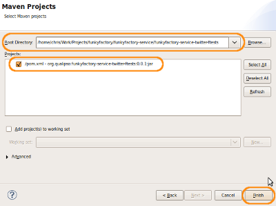
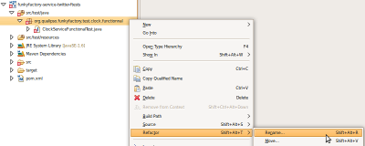
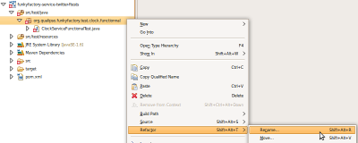
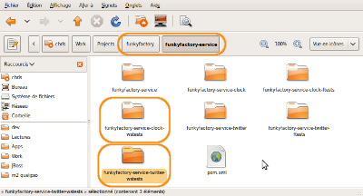
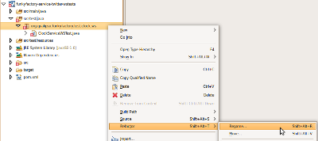
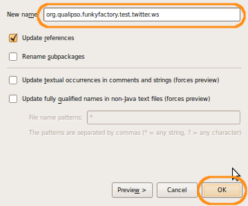
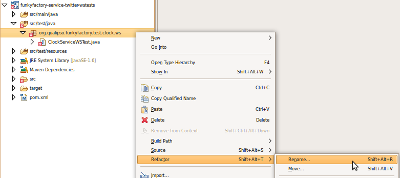
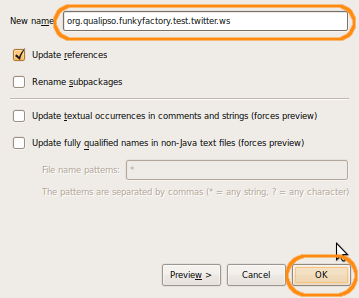

Adding the test structure
Before writing a single line of code, you need to have a full set of tests, in order to first code the test, then code the implementation passing this test. For a factory abstract service, there are three level of tests to pass:
- unit tests, testing a single method of the service; those tests are integrated in the service project and are run on each build.
- functional tests, testing a full functionality of the service, possibly spanning several methods. Those tests applies to a real, deployed service. As such, they require first that the service is built, deployed on a JBoss server, and running, to be able to run. They are run as a real client, in a separated JVM, calling the service remotely. That's why they are in a separated project from the service, as they consists in client code, that don't have to be put on the server. Functional tests are calling the service throught its RMI remote interface (standard remote interface for EJB).
- web services tests, testing the web service remote access to the service. Indeed, a factory abstract service provide two kind of remote access: the standard EJB RMI remote access, and a web service SOAP remote access. The RMI access is tested throught the preceding tests, the web service access is tested through those tests.
On this page, you will see the necessary steps to prepare the infrastructure for the whole three set of tests. Unit tests are done directly in the service project that you already prepared previously, in src/test/java. Functional and web services tests are done in separated projects, that you will create from the existing corresponding projects of the "ClockService" template.
Checklist
Here is the checklist of everything that you will do on this level:
Step 1: Prepare the unit tests
The unit tests are just testing the working of each method of the service. They are run on each build of the service, and are integrated in the service project. They use the ejb3unit library to test the EJB, and they can use jmock to mock other EJB. They are defined in the TwitterServiceTest.java file, in src/test/java:
- Open the TwitterServiceTest.java file, in src/test/java, and as always, comment everything, so that you will be able to use it as reference.
-
Create a new Java class, named "TwitterServiceTest", that extends the "BaseSessionBeanFixture<TwitterServiceBean>" class.
public class TwitterServiceTest extends BaseSessionBeanFixture<TwitterServiceBean> { }The BaseSessionBeanFixture<T> class is part of the ejb3unit library. It define a fixture, that is a set of unit tests, that will be run against a specific EJB. This specific EJB (TwitterServiceBean here) is given as parametized type to BaseSessionBeanFixture<T>. This way, ejb3unit will manage the life cycle of the EJB TwitterServiceBean (instanciate, destroy, etc.) and will run each tests against this EJB. -
BaseSessionBeanFixture<T> doesn't provide a default constructor without any parameters, so you need to implement a constructor that call one of the defined constructor of BaseSessionBeanFixture<T>. You will call BaseSessionBeanFixture(Class<T> sessionBeanToTest, Class[] usedEntityBeans). The first parameter is the class of the EJB you will test: here, it's' the class of the service you will test (TwitterServiceBean). Let the second parameter to usedEntityBeans for now:
public class TwitterServiceTest extends BaseSessionBeanFixture<TwitterServiceBean> { public TwitterServiceTest() { super(TwitterServiceBean.class, usedEntityBeans); } } -
In the called constructor, the second argument is an array of the class of all entity beans you will use in those tests - that is, here, of all the factory resources that will appears in those test. You don't know yet all the factory resources you will need, but you can be pretty sure that Tweet will at least be one of them. So add a static variable to manage this array of classes:
public class TwitterServiceTest extends BaseSessionBeanFixture<TwitterServiceBean> { public static final Class[] usedEntityBeans = {Tweet.class}; public TwitterServiceTest() { super(TwitterServiceBean.class, usedEntityBeans); } } -
You still have a warning about the use of the Class type for the usedEntityBeans variable. Indeed, Class is a generic type, and variables using this type are generally meant to be correctly casted at some point in the code. This casting can introduce errors, that will throws exceptions (ClassCastException). In order to remove this possibility of wrong casting, and thus inforce a stronger type checking, Java now prefers to parametize such generic type, just like what is done with BaseSessionBeanFixturew<T>. So that's the reason why the compiler is issuing a warning for the use of the Class type.
However, in your case, you won't do type cast, so you can add a annotation to tell the compiler to suppress this warning:
public class TwitterServiceTest extends BaseSessionBeanFixture<TwitterServiceBean> { @SuppressWarnings("unchecked") public static final Class[] usedEntityBeans = {Tweet.class}; public TwitterServiceTest() { super(TwitterServiceBean.class, usedEntityBeans); } }Later in the tutorial you will fill up this class with real test methods, but right now, this is enough for the tests infrastructure.
Step 2: Set the functional tests project
The functional tests are testing the whole functionality of the service, possibly spanning several methods of the service. They correspond to user stories for the service, and thus access the service as a standard client. They require a deployed and running service, and are run in a possibly separated JVM (Java Virtual Machine). For this reason, functional tests are in a separated maven (and thus Eclipse) project. Like for the service project, you will directly reuse the structure put in place in the "ClockService ftests" template.
- Go in the funkyfactory/funkyfactory-service folder, duplicate the funkyfactory-service-clock-ftests folder, and rename it "funkyfactory-service-twitter-ftests" 
-
Go in the newly created funkyfactory-service-twitter-ftests, and edit the pom.xml file. You need to replace the following elements:
- artifactId -> funkyfactory-service-twitter-ftests
- name -> funkyfactory-service-twitter-ftests
- version -> 0.0.1
-
Still in the pom.xml file, go down to the last dependency (currently set to funkyfactory-service-clock), and change it so that it's set to funkyfactory-service-twitter:
- artifactId -> funkyfactory-service-twitter
- version -> 0.0.1
- Back in the newly created funkyfactory-service-twitter-ftests, remove the "target" folder if it's present.
- In Eclipse, import the funkyfactory-service-twitter-ftests as a Maven project: 
-
Once imported, file and package in the project still have the "Clock" in their name:
 You need to change that, using the "Refactor" function of Eclipse. Right-click on the "org.qualipso.funkyfactory.test.clock.functional" package, in the "src/test/java" folder, and in the contextual menu, select "Refactor" -> "Rename...":

Change the name to "org.qualipso.funkyfactory.test.twitter.functional" and click on "OK":
You need to change that, using the "Refactor" function of Eclipse. Right-click on the "org.qualipso.funkyfactory.test.clock.functional" package, in the "src/test/java" folder, and in the contextual menu, select "Refactor" -> "Rename...":

Change the name to "org.qualipso.funkyfactory.test.twitter.functional" and click on "OK":

- Do the same refactoring for the "ClockServiceFunctionalTest.java" file, that you will rename to "TwitterServiceFunctionalTest.java".
-
Once this is done, the project content should look like this:


Step 3: Define the functional tests
Once the functional tests project structure is done, you can start to create the functional tests themselves. This is done in the TwitterServiceFunctionalTest.java file, in src/test/java.
- Open the TwitterServiceFunctionalTest.java file, in src/test/java, and start by commenting everything. You will start from scratch, keeping the old code as reference.
-
Define a new Java class, called "TwitterServiceFunctionalTest".
public class TwitterServiceFunctionalTest { }Right now, it's totally empty. To fill it up, you will need first to think about how you want to use the twitter service. You will do just that, and fill up this class, in the next tutorial page. But before that, you need first to prepare the webservice tests infrastructure.
Step 4: Set the webservice tests project
The webservice tests are testing the same thing than the functional tests, that is the whole functionality of the service, corresponding to user stories, but using the webservice remote access to the service (instead of the standard RMI one). As the functional tests, they require a deployed and running service, and are in a separated maven (and thus Eclipse) project. Like for the functional tests project, you will directly reuse the structure put in place in the "ClockService wstests" template.
- Go in the funkyfactory/funkyfactory-service folder, duplicate the funkyfactory-service-clock-wstests folder, and rename it "funkyfactory-service-twitter-wstests" 
-
Go in the newly created funkyfactory-service-twitter-wstests, and edit the pom.xml file. You need to replace the following elements:
- artifactId -> funkyfactory-service-twitter-wstests
- name -> funkyfactory-service-twitter-wstests
- version -> 0.0.1

-
Still in the pom.xml file, inside the configuration for the jaxws-maven-plugin:
- set wsdlUrl to ${ws.root.uri}/twitter?wsdl
- set packageName to org.qualipso.funkyfactory.test.clock.ws.client

- Back in the newly created funkyfactory-service-twitter-wstests, remove the "target" folder if it's present. Go in the src/main/java folder, and remove also the "org" folder.
-
In Eclipse, import the funkyfactory-service-twitter-wstests as a Maven project:

-
Once imported, file and package in the project still have the "Clock" in their name:
 You need to change that, using the "Refactor" function of Eclipse. Right-click on the "org.qualipso.funkyfactory.test.clock.ws" package, in the "src/test/java" folder, and in the contextual menu, select "Refactor" -> "Rename...":

Change the name to "org.qualipso.funkyfactory.test.twitter.ws" and click on "OK":

You need to change that, using the "Refactor" function of Eclipse. Right-click on the "org.qualipso.funkyfactory.test.clock.ws" package, in the "src/test/java" folder, and in the contextual menu, select "Refactor" -> "Rename...":

Change the name to "org.qualipso.funkyfactory.test.twitter.ws" and click on "OK":

- Do the same refactoring for the "ClockServiceWSTest.java" file, that you will rename to "TwitterServiceWSTest.java".
-
Once this is done, the project content should look like this:


{kind=link}
{kind=link}
{kind=link}
{kind=link}
{kind=link}
{kind=link}
{kind=link}
{kind=link}
Step 5: Define the webservice tests
Once the webservice tests project structure is done, you can start to create the webservice tests themselves. This is done in the TwitterServiceWSTest.java file, in src/test/java.
- Open the TwitterServiceWSTest.java file, in src/test/java, and start by commenting everything. Again, you will start from scratch, keeping the old code as reference.
-
Define a new Java class, called "TwitterServiceWSTest".
public class TwitterServiceWSTest { }Right now, it's totally empty. As for the functional tests, you will need first to define the specification of the twitter service before filling it up.
You now have a complete empty scaffolding structure for your service, containing not only the service itself but also all its tests (unit, functional, webservice). You can now start to define your service.